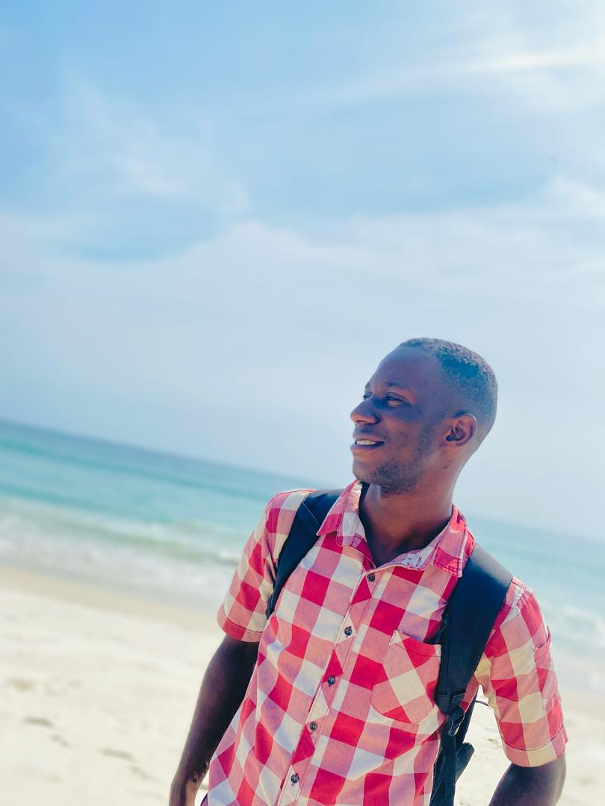
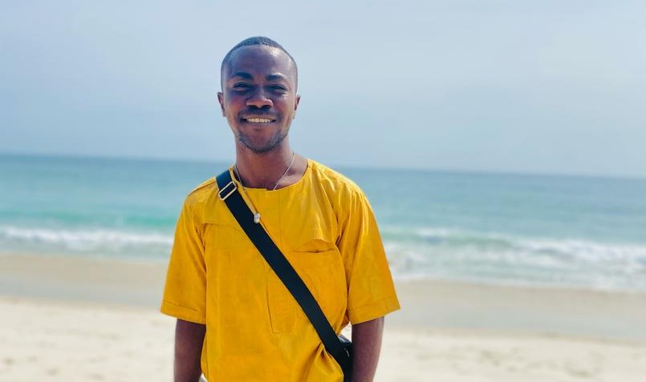

About Me

Hello! My name is Dunnoh Yovonie. I am passionate about learning, creating, and helping others through technology and design. With a background in web development, business management, and Research. I enjoy working on projects that make a positive impact and solve real-world problems. Outside of work, I love exploring new places, meeting new people, and continuously expanding my skills. Whether it’s through coding, reading, or collaborating with others, I strive to grow every day and make meaningful contributions wherever I go.

Freetown is the capital and largest city of Sierra Leone, located on the Atlantic coast of West Africa. Known for its beautiful beaches and historic significance, Freetown was founded in 1792 by freed African American, Caribbean, and liberated African slaves. The city is a vibrant cultural and economic hub, home to historic landmarks such as the Cotton Tree and Fourah Bay College, the oldest university in West Africa. With a diverse population and bustling markets, Freetown blends rich history with modern urban life.